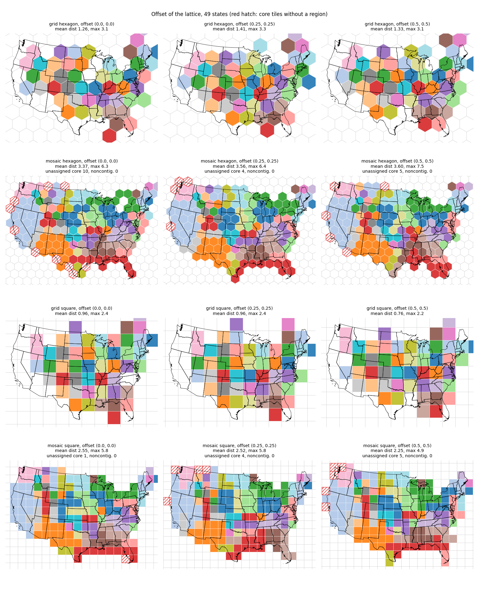
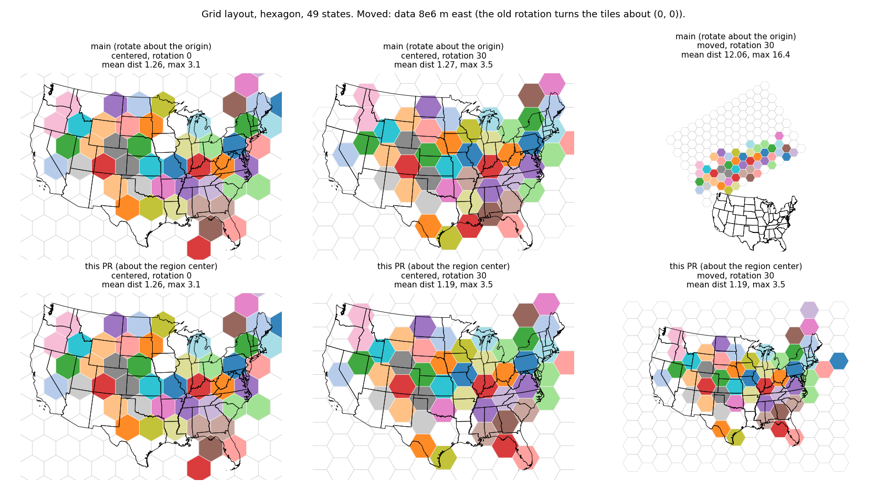
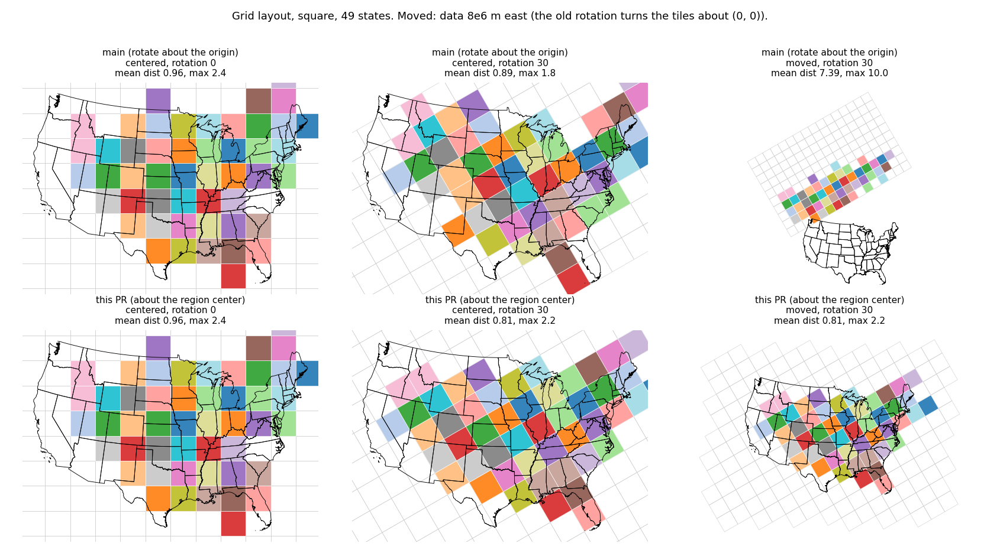
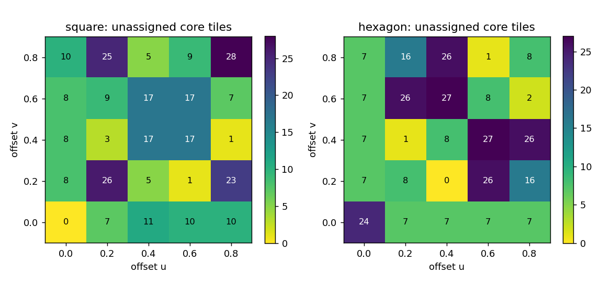
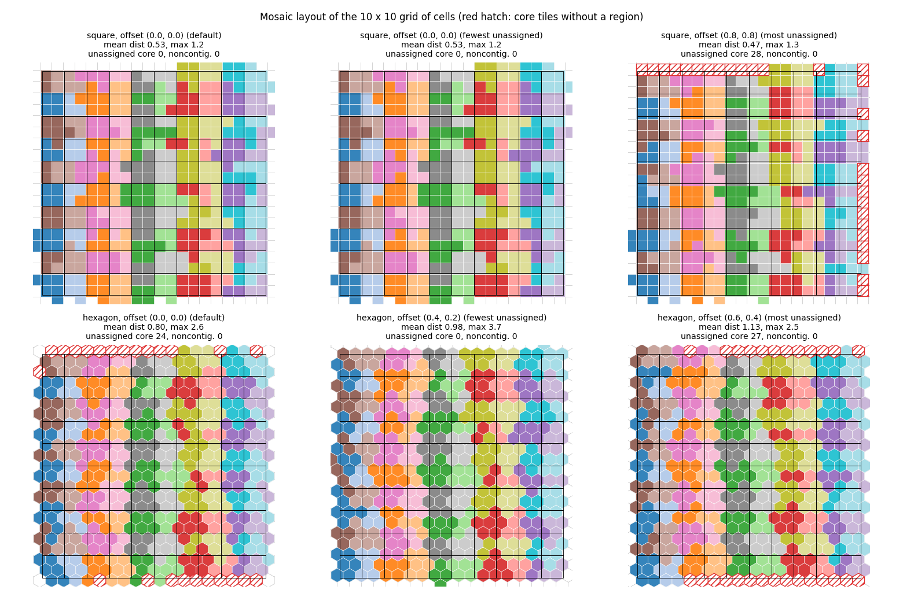

The grid and mosaic layouts get the options rotation (degrees, about the center of the covered region) and offset (lattice phase in multiples of the two translation vectors, periodic), applied through the new Tiling.rotated and Tiling.with_offset, and Tiling.generate loses compute_adjacency. With rotation 0 and offset (0, 0) the assignments of 17 grid and mosaic cases equal those of main exactly; the old grid rotation turned the finished tiles about the origin, which moved them 12 tile sizes away from data 8e6 m east of it and now gives 1.2.
Step 3 of proposal-isotile-adoption (sections 3.2, 4.10, 7 and 8.2, decisions 5 and 12), after step 1 and step 2. With rotation 0 and offset (0, 0) nothing changes; the result-changing part is the grid layout with rotation other than 0, shown below.
Files: experiments.py (the runs; stores tile polygons and assignments), make_figures.py (figures and tables.md), identity_check.py and identity_output.txt, timing.txt, experiments_old.txt and experiments_new.txt (raw output). Commands, from a carto-flow checkout with the environment of the project (the old tree is an archive of 0365919 on PYTHONPATH):
python identity_check.py run <label> <out.pkl> [--repeat N] [case ...]
python identity_check.py compare old.pkl new.pkl
python experiments.py <label> <out.pkl> # the old tree runs only the rotation experiment
PYTHONPATH=. python make_figures.py exp_old.pkl exp_new.pkl .compute_adjacency removed from Tiling.generate (own commit, own changelog line). The sparse adjacency from the lattice table takes 0.7 ms at 1,300 tiles and 3 ms at 10,000 tiles, 2 to 3 percent of generate (146 ms for 10,300 hexagons). The mosaic calibration passed compute_adjacency=False for its trial builds; it now builds them with adjacency and no separate cheap path remains. The wall times of the layouts do not change (timing.txt: districts mosaic hexagon 6.59 s before and 6.56 s after, states grid hexagon 1.59 s and 1.61 s).Tiling.rotated(angle) (degrees, counter-clockwise) returns a copy whose isotile frame is rotated. fill_region replaces the position of the frame by the center of the region and keeps its linear part, so the lattice turns about the region center and covers the region whatever the angle. canonical_tile stays the unrotated tile and the angle is added to the tile transforms (TileTransform.rotation), as TilingResult.rotate did; every polygon equals the canonical tile placed by its transform (tested at 0, 30 and -75 degrees). Rotations add up.Tiling.with_offset((u, v)) shifts the placed lattice by u * translation_u + v * translation_v, the two translation vectors of the placed tiling (isotile translation_u and translation_v; they turn with rotated). Square tiling: the tile sides along x and y. Hexagon tiling: two vectors between neighboring centers, 60 degrees apart. Triangle, quadrilateral and the 81 isohedral types: the translations of the type. The option is periodic by construction: (u + 1, v) and (u, v + 1) give the same tile set for every tiling, which an offset in tile sizes along x and y would not do for a hexagon. fill_region anchors the lattice at the region center and cannot be given another anchor, so for an offset other than (0, 0) generate places the tiling with fill_region, moves its frame by the offset and calls cover on the same expanded region. That is one more cover: 244 ms instead of 146 ms for 10,300 hexagons.rotation: float = 0.0 and offset: tuple[float, float] = (0.0, 0.0) on GridBasedLayoutOptions and MosaicLayoutOptions. validate() (called when a layout is constructed) raises ValueError for a non-finite or non-numeric rotation and for an offset that is not a pair of finite numbers. _orient_tiling (layouts/base.py) applies both to the resolved tiling; rotation 0 and offset (0, 0) return the tiling itself. The grid layout no longer rotates the result. The mosaic calibration receives the oriented tiling, so the reference build, every trial build and the final build on the expanded bounds share one lattice; the expansion is symmetric, so the shifted lattice keeps its tiles (tested: the layout's tiles equal a direct build of the oriented tiling on the expanded bounds).TilingResult.rotate stays; its docstring says that it turns existing tiles about the origin and that the region is not covered afterwards.tiling-system.md, the two option tables, the option docstrings and the changelog (a breaking-changes entry for the grid rotation, an Added entry for the options and the two methods). No gallery example or notebook used rotation.2,069 passed, 2 skipped, 4 xfailed (1,826 passed before: 244 new tests, one test of the removed parameter replaced, the class TestComputeAdjacencyFlag removed). ruff, mypy and deptry src pass. New file tests/test_tiling_lattice_options.py:
| group | checks |
|---|---|
rotated (square, hexagon, triangle, parallelogram, scalloped_hexagon) | angle 0 unchanged; returns a copy; rotations add up; the lattice covers the region at 30, 45, -17 and 90 degrees; the square lattice has a corner at the region center; transforms contain the angle and place the canonical tile on every polygon; tile size unchanged; non-finite angle rejected; data 8e6 m from the origin give the tile centers of centered data relative to the region center (1e-6) |
with_offset | (0, 0) bit-identical; one period in u, in v, in both and (-1, 2) gives the same centers (1e-9) for all five tilings, also from the default; the square offset moves the lattice by the given fractions of the tile side; the shift equals u * translation_u + v * translation_v of the rotated tiling; the shifted lattice covers the region; far from the origin as for rotation; rotation and offset commute; nine bad offsets rejected; list and array accepted |
| options (both dataclasses) | defaults; round trip through dataclasses.replace and asdict; bad rotation and offset rejected by validate; other pairs accepted |
| layouts | rejection at construction; unknown names still raise; default equals explicit defaults; grid rotation covers the region and turns the tiles; grid positions of data 8e6 m east equal those of centered data for square and hexagon with rotation, offset and both (1e-6); mosaic tiles equal a direct build of the oriented tiling on the expanded bounds; calibrate_tiling with a rotated and shifted tiling reaches the target and keeps the angle; mosaic rotation on data 8e6 m east |
identity_check.py is the script of the step 2 page: 17 cases (the 9 grid and mosaic cases of the states, the two states grid cases with a tile count column, the districts grid with hexagon and square, the districts mosaic grouped by state with four tilings) run with an archive of main at 0365919 and with this branch; assignments and source indices are compared with np.array_equal. identity_output.txt: all 17 are identical, and the lattice sizes are equal. The wall times in that file are single runs while tests and mypy ran. timing.txt repeats 7 of the cases, best of 3, old and new one after the other with nothing else running: new / old between 0.98 and 1.04.
Grid layout of the 49 states (one tile per state), rotation 0 and 30. "Moved" is the same data 8e6 m east. Distance is between the centroid of a region and the centroid of its tile, in tile sizes. Before, GridBasedLayout generated the tiles on the region and then called TilingResult.rotate, which turns tile centers about (0, 0).
| tiling | position | rotation | version | mean distance | largest distance | lattice tiles | seconds |
|---|---|---|---|---|---|---|---|
| hexagon | centered | 0 | main | 1.262 | 3.10 | 149 | 1.61 |
| hexagon | centered | 0 | this PR | 1.262 | 3.10 | 149 | 1.63 |
| hexagon | centered | 30 | main | 1.270 | 3.48 | 149 | 1.61 |
| hexagon | centered | 30 | this PR | 1.185 | 3.50 | 143 | 1.57 |
| hexagon | moved | 0 | main | 1.262 | 3.10 | 149 | 1.61 |
| hexagon | moved | 0 | this PR | 1.262 | 3.10 | 149 | 1.57 |
| hexagon | moved | 30 | main | 12.057 | 16.37 | 149 | 1.62 |
| hexagon | moved | 30 | this PR | 1.185 | 3.50 | 143 | 1.53 |
| square | centered | 0 | main | 0.956 | 2.42 | 160 | 1.66 |
| square | centered | 0 | this PR | 0.956 | 2.42 | 160 | 1.71 |
| square | centered | 30 | main | 0.886 | 1.81 | 160 | 1.67 |
| square | centered | 30 | this PR | 0.808 | 2.19 | 174 | 1.83 |
| square | moved | 0 | main | 0.956 | 2.42 | 160 | 1.68 |
| square | moved | 0 | this PR | 0.956 | 2.42 | 160 | 1.71 |
| square | moved | 30 | main | 7.388 | 9.95 | 160 | 1.70 |
| square | moved | 30 | this PR | 0.808 | 2.19 | 174 | 1.91 |
The mosaic layout had no rotation before. With this PR, hexagon, rotation 30, morph=False, 154 tiles:
| position | mean distance | largest distance | unassigned core | noncontiguous | seconds |
|---|---|---|---|---|---|
| centered | 3.544 | 6.81 | 6 | 0 | 1.76 |
| moved | 3.544 | 6.81 | 6 | 0 | 1.75 |
Both positions give the same metrics and the same number of unassigned core tiles (6 here, 10 at rotation 0), as the options act relative to the region.
Offsets (0, 0), (0.25, 0.25) and (0.5, 0.5) on the states, grid and mosaic, hexagon and square. Red hatch in the figure: core tiles (at least 10 percent of the tile inside the union of the regions) that no region received.
| layout | tiling | offset | mean distance | largest distance | unassigned core | noncontiguous | seconds |
|---|---|---|---|---|---|---|---|
| grid | hexagon | (0.0, 0.0) | 1.262 | 3.10 | 1.71 | ||
| grid | hexagon | (0.25, 0.25) | 1.415 | 3.34 | 1.70 | ||
| grid | hexagon | (0.5, 0.5) | 1.330 | 3.14 | 1.06 | ||
| mosaic | hexagon | (0.0, 0.0) | 3.375 | 6.33 | 10 | 0 | 1.81 |
| mosaic | hexagon | (0.25, 0.25) | 3.558 | 6.45 | 4 | 0 | 1.12 |
| mosaic | hexagon | (0.5, 0.5) | 3.602 | 7.47 | 5 | 0 | 1.05 |
| grid | square | (0.0, 0.0) | 0.956 | 2.42 | 1.73 | ||
| grid | square | (0.25, 0.25) | 0.956 | 2.38 | 1.71 | ||
| grid | square | (0.5, 0.5) | 0.758 | 2.24 | 1.72 | ||
| mosaic | square | (0.0, 0.0) | 2.551 | 5.85 | 1 | 0 | 0.90 |
| mosaic | square | (0.25, 0.25) | 2.522 | 5.78 | 4 | 0 | 0.93 |
| mosaic | square | (0.5, 0.5) | 2.248 | 4.87 | 5 | 0 | 0.93 |
The offset moves the lattice relative to the data, so the metrics change by amounts of the order of the lattice-position noise measured on the step 1 page (hexagon grid 1.20 to 1.49, square grid 0.71 to 0.96 over six shifts): the grid hexagon goes from 1.262 to 1.415 and 1.330, the grid square from 0.956 to 0.956 and 0.758. The mosaic layout has no non-contiguous region at any of the six offsets. The unassigned core tiles of the mosaic layouts are 10, 4 and 5 (hexagon) and 1, 4 and 5 (square): the offset changes where the calibration stops, in no systematic direction.
The mosaic layout of 100 unit cells with 2 to 6 tiles each (the input of the step 1 page), square and hexagon tilings. Unassigned core tiles at the default (0, 0): square 0, hexagon 24 (the numbers of the issue). The scan of the offset over a 5 x 5 grid, u and v in 0, 0.2, 0.4, 0.6, 0.8, is in experiments.py only; a library helper is not part of this PR.
square: unassigned core tiles over the 5 x 5 scan: min 0, max 28, default 0, offset of the minimum (0.0, 0.0) hexagon: unassigned core tiles over the 5 x 5 scan: min 0, max 27, default 24, offset of the minimum (0.4, 0.2)
Rotation at offset (0, 0):
| tiling | rotation | mean distance | unassigned core | noncontiguous | seconds |
|---|---|---|---|---|---|
| square | 0 | 0.530 | 0 | 0 | 0.52 |
| square | 15 | 0.668 | 3 | 0 | 0.43 |
| square | 30 | 0.622 | 0 | 0 | 0.31 |
| square | 45 | 0.725 | 0 | 0 | 0.38 |
| hexagon | 0 | 0.799 | 24 | 0 | 0.57 |
| hexagon | 15 | 0.858 | 7 | 0 | 0.48 |
| hexagon | 30 | 0.765 | 24 | 0 | 0.57 |
| hexagon | 45 | 0.949 | 1 | 0 | 0.36 |
layouts/grid/_placement.py still accept a dense matrix as well as a sparse one (_canonical converts both); the layouts pass the sparse matrices of TilingResult. The migration page of step 4 can state that the public result fields are sparse and that these private helpers take either. Nothing was changed here.Tiling.rotated and Tiling.with_offset are defined on the base class and raise NotImplementedError in a subclass that does not implement them; all tilings of the package do.fill_region; fill_region replaces the position of the frame, so the shift is applied to the frame that fill_region returns and the region is covered again (see above). Nothing is missing in isotile: with_frame and cover suffice.(0, 0) anchors the lattice at the region center, which gives 24 unassigned core tiles for hexagons on the symmetric grid (issue #192). This PR provides the lever; it does not choose an offset automatically.
Rows: grid hexagon, mosaic hexagon, grid square, mosaic square. Columns: offset (0, 0), (0.25, 0.25), (0.5, 0.5).

Grid layout, hexagon tiling, 49 states. Top row: main (rotation about the origin); bottom row: this PR. Columns: centered rotation 0, centered rotation 30, data 8e6 m east with rotation 30 (the axes cover tiles and states; the states are the small outline in the main panel). Light gray: the lattice; colored: assigned tiles; black: state outlines.

The same for the square tiling.

Unassigned core tiles over the offset scan, square and hexagon tilings. u runs along the horizontal axis and v along the vertical axis.

Mosaic layout of the 10 x 10 grid. Top: square tiling at the default offset (0 unassigned, the minimum of the scan; the middle panel repeats it) and at (0.8, 0.8) (28, the maximum). Bottom: hexagon tiling at the default (24), at (0.4, 0.2) (0) and at (0.6, 0.4) (27). Red hatch: unassigned core tiles.